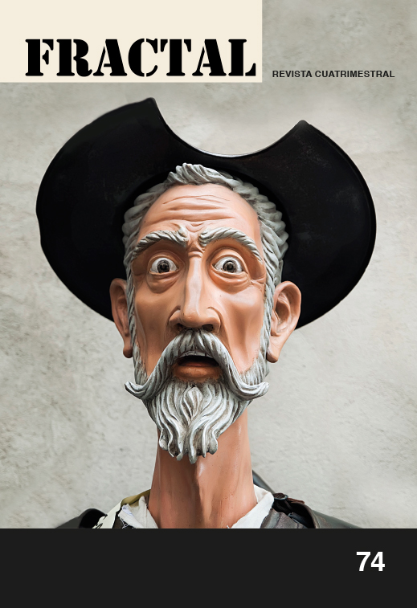

La X y la Y
- Para una teoría de la potencia destituyente
Giorgio Agamben - 12 397. Fórmulas para poblar un desierto
Dante A. Saucedo
El periódico Unomásuno de los años ochenta resulta central para el periodismo mexicano contemporáneo. Se trata de la historia de un grupo de periodistas que, apoyado por una sociedad harta de hegemonía del PRI, acompañó los movimientos guerrilleros
Leer Máskeyboard_arrow_right
Siempre he sabido que titular a esta serie de escrituras Defensas acarreaba deslices. La pensé y la sigo pensando de una manera irónica, y por esa razón en comentarios y mensajes privados la he llamado unas veces “parachoques” y otras “salpicaderas” o “parabrisas”.
Leer Máskeyboard_arrow_right
En sus Ejercicios espirituales (1548), Ignacio de Loyola, fundador de la Compañía de Jesús, plantea una "composición de lugar" como preámbulo y fundamento de la contemplación visual.
En sus Ejercicios espirituales (1548), Ignacio de Loyola, fundador de la Compañía de Jesús, plantea una "composición de lugar" como preámbulo y fundamento de la contemplación visual.